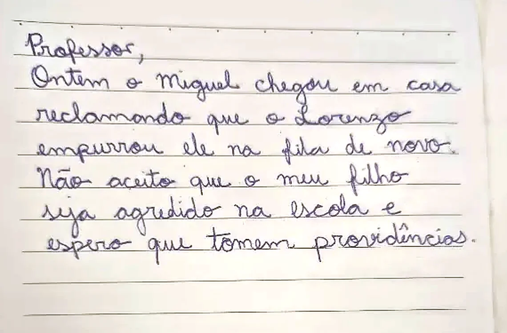

Responder um bilhete
Tire uma foto do bilhete da agenda, fale pelo microfone o que você quer dizer e peça ao Gemini uma resposta no tom certo

Prezada mãe,
Compreendo a sua preocupação em relação à situação na fila. Sobre o ocorrido ontem, presenciei o momento e conversei com os dois alunos imediatamente. Na ocasião, ambos estavam se empurrando mutuamente, e orientei sobre o comportamento adequado.
Acompanho a turma de perto e estou com atenção redobrada na fila. Se desejar conversar pessoalmente, estarei à disposição na saída de quinta-feira.
Atenciosamente,
Leia o bilhete com calma
- Bilhete assim mexe com a gente. Antes de responder, leia de novo e veja o que a família está pedindo.
- Repare nas palavras: "de novo" (já aconteceu antes), "agredido" (para a mãe foi sério) e "providências" (ela quer saber o que você fez).
- A resposta precisa falar dessas três coisas, sem acusar nem se defender.
- No celular, abra a foto, toque em Compartilhar e escolha Drive, na conta @educa.
- No computador, no Gemini, clique no + e em Adicionar do Drive.
- No celular, mande a foto para você mesma: a conversa com o seu próprio número.
- No computador, abra o WhatsApp Web e baixe a foto.
- No Gemini, clique no + e em Enviar arquivos.
Leve a foto para o computador
- O Gemini da conta @educa não abre no celular. Tire a foto no celular e faça o resto no computador.
- O caminho mais curto é o Google Drive: a foto fica na sua conta e o Gemini acha direto.
- WhatsApp ou e-mail para você mesma também funciona. Depois de enviar, é só abrir pelo computador e baixar a foto.

No Gemini: Anexe a foto
- No Gemini do computador, clique no +.
- Se você salvou a foto no drive, clique em Adicionar do Drive.
- Se você baixou a foto no computador, use Enviar arquivos.
- O Gemini é capaz de ler a letra de mão. Assim você não precisa digitar o bilhete.
me ajuda a responder esse bilhete da mãe do Miguel que eu mandei a foto então assim eu vi sim que teve um empurra-empurra na fila ontem mas não foi bem assim os dois estavam brincando de empurrar e o Miguel também empurrou mas eu entendo que ela tá preocupada né é mãe e eu quero que ela saiba que eu tô atenta eu já conversei com os dois na hora e vou ficar de olho na fila e eu queria chamar ela pra conversar pessoalmente se ela quiser pode ser na saída na quinta-feira mas eu não quero parecer que eu tô brigando com ela nem me defendendo demais sabe quero um tom mais neutro e educado mais formal mas com palavras simples e tem que caber na agenda
Fale o que você quer dizer
- Toque no microfone e fale como se estivesse contando para uma colega. Não precisa pontuar nem falar bonito.
- Conte o que aconteceu, o que você já fez, o que vai fazer e o que oferece à família.
- Diga também como quer soar e como não quer: "mais neutro e educado, mas com palavras simples", "não quero parecer que estou brigando". Isso orienta o tom.

Leia o primeiro rascunho
- A fala corrida virou um bilhete organizado, num tom calmo, com o convite para quinta-feira e espaço para a assinatura.
- Agora é hora de revisar e fazer ajustes.
- Por exemplo: "tratava-se de uma brincadeira" pode soar como pouco caso. Vamos pensar em outras formas de dizer?
- Talvez você sinta necessidade de dar novas orientações para melhorar a resposta.
o tom ficou bom mas tira esse tratava-se de uma brincadeira que parece que eu tô fazendo pouco caso e ela escreveu que foi de novo então a resposta tem que falar disso também e começa sem o olá com exclamação e outra coisa tira o nome do Lorenzo não posso falar de outra criança no bilhete de outra família fala só os dois sem dizer quem
Ajuste falando de novo
- Diga com as suas palavras o que não gostou: "parece que eu tô fazendo pouco caso", "ela escreveu que foi de novo".
- Outro ponto de atenção: nome de outra criança não deve ser citado no bilhete de outra família. Peça para a IA tirar.
- Junte tudo numa fala só: o Gemini refaz o bilhete de uma vez.
Prezada mãe,
Compreendo a sua preocupação em relação à situação na fila. Sobre o ocorrido ontem, presenciei o momento e conversei com os dois alunos imediatamente. Na ocasião, ambos estavam se empurrando mutuamente, e orientei sobre o comportamento adequado.
Acompanho a turma de perto e estou com atenção redobrada na fila. Se desejar conversar pessoalmente, estarei à disposição na saída de quinta-feira.
Atenciosamente,
Revise e copie
- Uma última lida para ver se todas as informações estão corretas.
- Se já estiver "quase lá", não precisa pedir novas correções à IA. Você ajusta na hora de escrever na agenda.
Da intenção para o bilhete escrito
- Interativo: toque em um trecho da fala para ver como ele ficou no bilhete.
- As ideias são todas suas. A IA mudou a ordem, a forma e o tom.
- Falar foi mais rápido que escrever, e você não teve de achar as palavras certas com a cabeça quente.